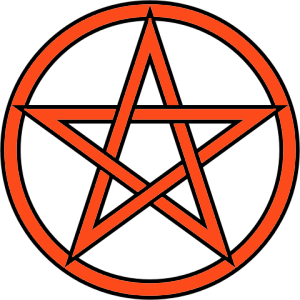

|  | Our GrimoireOne look into Wicca, witchcraft, and magic |
Enchantment to Attract MoneyThis enchantment is intended to help you when you are in need of money. It is not simply to accumulate wealth or to build greedily. It should only be used out of need. The spell is to be cast on the night of a full moon and is a call to the Roman goddess of luck, Fortuna. What You'll NeedSeven strands of fine natural thread (about one to two feet each) InstructionsFortuna is the goddess of luck. This means both good luck and bad luck so it is important that any time you ask for luck it is good luck. Just before you go to bed, braid the strands of thread together while you repeat this spell: "Sweet goddess Fortuna, of fortune and luck, Repeat these word over and over as you continue to braid. Continue to say these words as you tie nine knots along the length of the braided cord. The number nine represents gold and is the number of truth and clarity. As you tie these knots, see your needs being met in your mind. Once you have tied the knots, you may stop repeating the incantation. Place the cord under your bed to encourage Fortuna's good luck and welcome new money into your life. |
|